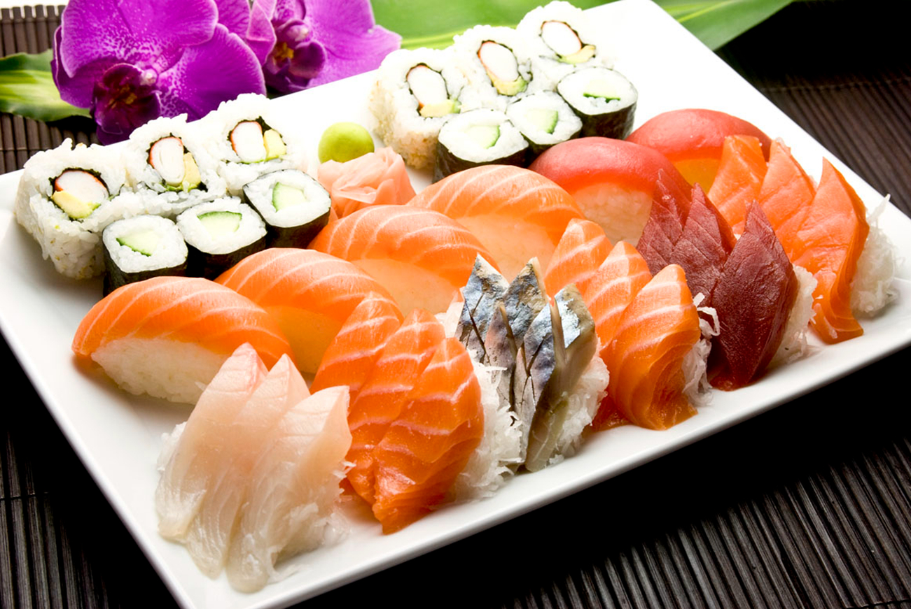

Spécialités japonaises : sushi, maki, sashimi, temaki et yakitori (brochettes grillées). Sur place, à emporter ou en livraison.
Nous n'utilisons que des produits frais de qualité, achetés tous les matins chez nos partenaires, avec qui nous travaillons depuis 2009.
38 rue Louis Braille, 75012 Paris
Nikayo
38 rue Louis Braille
75012 Paris
Métro ligne 6 – Bel-Air
Métro ligne 8 – Michel Bizot
Ouvert 7j/7
11h45 – 14h30
18h30 – 22h00
Fermé samedi midi et dimanche midi
01 43 43 68 57
01 40 19 97 38
Livraison dès 18 €